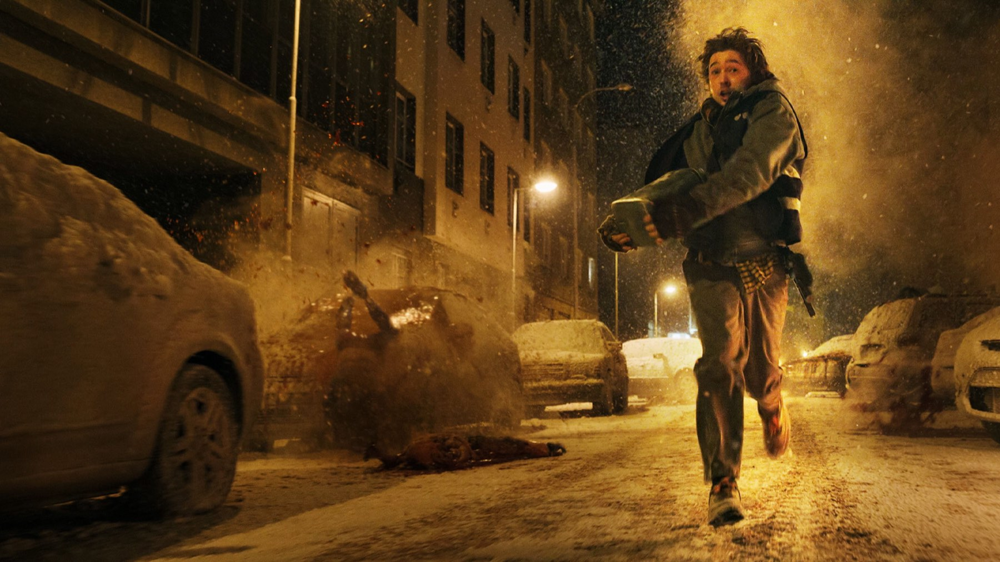

Resident Evil
Un corriere, una notte a Raccoon City e un horror che ride di sé: Cregger smonta la saga, ma non tutti ridono con lui
Il protagonista di questo Resident Evil non è un soldato, non è un agente speciale e non conosce Raccoon City. È un uomo che deve consegnare un pacco. Zach Cregger sceglie di raccontare la saga dal punto di vista di chi si trova nel posto sbagliato nella notte sbagliata, e la scommessa è più coraggiosa di quanto sembri: togliere agli spettatori i volti noti dei videogiochi e affidarsi a una commedia nera piena di mostri. Il film è nelle sale italiane dal 17 settembre 2026.
Di cosa parla Resident Evil?
Bryan Hodukavich, interpretato da Austin Abrams, è un corriere medico incaricato di portare uno stabilizzatore al laboratorio di un ospedale, dove potrebbe servire a mettere a punto una cura. Intorno a lui Raccoon City è nel pieno di un'epidemia biologica, tra creature mutate e dipendenti dell'Umbrella: Zach Cherry è Carl, Paul Walter Hauser è Paul e Kali Reis è Maxine, descritta come una addetta alla sicurezza della compagnia. La sceneggiatura è di Cregger e Shay Hatten, la fotografia di Dariusz Wolski.
Il budget è di 75 milioni di dollari e le riprese sono durate dal 10 ottobre 2025 al 22 gennaio 2026, a Praga. La premessa non ha altro da dire, ed è giusto così: il film vive di ciò che succede lungo il percorso, non di un intreccio da svelare.

Un videogioco giocato da fuori
La prima scelta che conta è di punto di vista. Federico Gironi, su ComingSoon (4 stelle su 5), apprezza che la sceneggiatura abbandoni del tutto i personaggi dei giochi e racconti un estraneo: Bryan scopre la città insieme a noi, e il suo spaesamento diventa il motore sia della paura sia delle risate. Gironi segnala anche le soggettive che ricordano i videogiochi in prima persona e un uso abbondante di effetti tradizionali accanto a quelli digitali, con un gore che cresce man mano che il ritmo accelera.
È la parte che ci convince di più. Un'avventura in cui l'obiettivo è semplice (arrivare in fondo con il pacco) e gli ostacoli si moltiplicano è esattamente la grammatica del videogioco, e Cregger la usa senza tradurla in missioni e checkpoint. Gironi tira in ballo La cosa di Carpenter, Society e Alien: citazioni di un horror del corpo che fa venire voglia di rivedere i modelli, più che di ricordare i giochi. I numeri danno ragione a questa lettura: l'indice di Rotten Tomatoes è 96% su 284 recensioni e la sintesi della piattaforma parla di «spaventi indimenticabili» in una durata snella, con Abrams a fornire il necessario respiro comico.

Austin Abrams, il vero asso
Su un punto le fonti che abbiamo letto vanno nella stessa direzione: Abrams regge il film. Il riassunto della critica su Rotten Tomatoes parla del suo «tempismo comico» come del respiro che serve tra uno spavento e l'altro, e Gironi lo definisce eccellente nei panni di un uomo qualunque catapultato in un luogo che non conosce. È una scelta di casting che racconta il film meglio di qualsiasi trailer: un protagonista che sbaglia, esita e commenta, al posto del solito eroe che spara. Intorno a lui Hauser, Cherry e Reis portano il lato aziendale dell'Umbrella, quello di chi lavora per la compagnia mentre la città brucia.
Dove il tono smette di funzionare
Non tutti ridono. Su Nerdevil, il recensore che si firma Nefasto stronca l'idea di fondo: Cregger avrebbe trasformato Resident Evil in una «commedia grottesca», con un bel prologo che si sfalda quando il caos degli zombie prende il via. Il suo rilievo più preciso riguarda Bryan, che da un certo punto in poi non agirebbe più in modo coerente e logico: nel gioco gli errori sono tentativi, al cinema diventano una stupidità imposta dalla sceneggiatura, e la barzelletta della scelta sbagliata che innesca la scena d'azione stanca presto.
Il rilievo è serio e lo prendiamo sul serio, perché tocca il punto in cui il film rischia di più. Anche Gironi, che pure lo promuove, giudica la sottotrama della fidanzata incinta di Bryan «un po' troppo buonista e patetica». La distanza tra le due recensioni dice una cosa utile a chi deve decidere se andare: il film è una commedia horror prima che un survival, e chi cerca la tensione cupa dei primi giochi potrebbe restare spiazzato.
Come lo ha accolto la critica e il pubblico?
A ottobre 2026 Rotten Tomatoes dà il 96% di recensioni positive su 284 e il 91% di gradimento del pubblico (Popcornmeter); su Metacritic la media è 79 su 100 su 51 recensioni, secondo Wikipedia. È il videogioco-film meglio valutato su entrambi i siti. Il CinemaScore, cioè il voto degli spettatori americani in sala, è B+. Al botteghino, secondo Wikipedia, il film ha superato i 216 milioni di dollari nel mondo al 3 ottobre 2026, a fronte di un budget di 75 milioni, con 60 milioni incassati negli Stati Uniti nel weekend d'esordio.
Vale la pena vederlo al cinema?
Sì, se vi piace ridere mentre sobbalzate sulla poltrona. Resident Evil è per chi ama le commedie horror con mostri, gore e un protagonista che non sa niente, e funziona anche senza aver mai giocato: nessuna conoscenza della saga è richiesta. Va evitato da chi vuole un film fedele all'atmosfera dei primi giochi, e da chi non sopporta i personaggi che fanno scelte sbagliate per far partire la scena successiva.
Un horror che gioca con il suo stesso videogioco e vince più di quanto perda. Se da un lato l'idea dell'estraneo e il mix di spavento e risata sono una trovata riuscita, dall'altro il tono rischia di logorare la coerenza del protagonista, come segnala Nerdevil. Lo consigliamo a chi cerca un horror scatenato e non teme di ridere nel momento sbagliato.
Domande frequenti
Quando esce Resident Evil in Italia?
Il film di Zach Cregger è nelle sale italiane dal 17 settembre 2026, secondo la scheda di ComingSoon.
Di cosa parla il nuovo Resident Evil?
Di Bryan Hodukavich, un corriere medico che deve consegnare un pacco con uno stabilizzatore al laboratorio di un ospedale mentre Raccoon City è travolta da un'epidemia e da creature mutate.
Bisogna aver giocato ai videogiochi per capirlo?
No. Il film racconta una storia originale e lascia da parte i personaggi dei giochi: Bryan è un estraneo che scopre Raccoon City insieme allo spettatore.